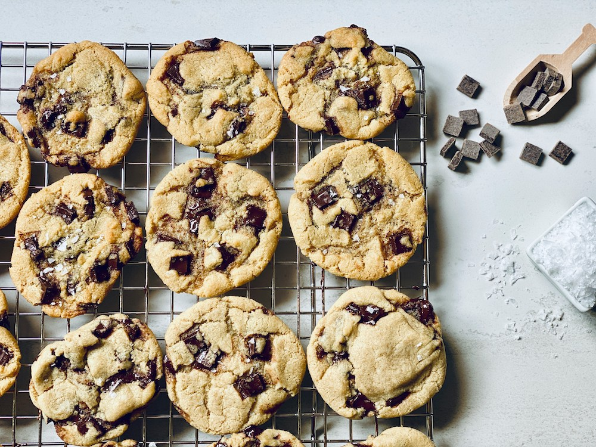

by Chef Alli Pytlik
| 1 cup (2 sticks) | unsalted butter, softened |
| 3/4 cup | granulated sugar |
| 3/4 cup, packed | brown sugar |
| 2 pieces | large eggs |
| 1 teaspoon | vanilla extract |
| 2 1/4 cups | all-purpose flour |
| 1 teaspoon | baking soda |
| 1/ teaspoon | salt |
| 2 cups | semisweet chocolate chips |